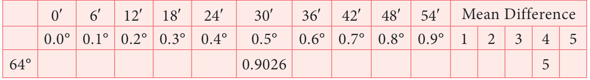
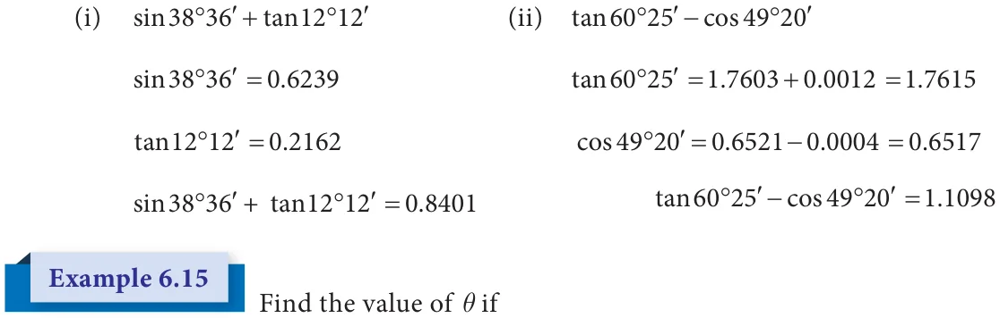
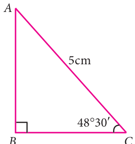

We have learnt to calculate the trigonometric ratios for angles \(0 ^{\circ}\) , \(30 ^{\circ}\) , \(45 ^{\circ}\) , \(60 ^{\circ}\) and \(90 ^{\circ}\) . But during certain situations we need to calculate the trigonometric ratios of all the other acute angles. Hence we need to know the method of using trigonometric tables.
One degree \((1 ^{\circ}\) ) is divided into 60 minutes (60 ' ) and one minute (1 ' ) is divided into 60 seconds (60 ' ' ). Thus, \(1 ^{\circ} = 60\) ' and 1 60 .
The trigonometric tables give the values, correct to four places of decimals for the angles from \(0 ^{\circ}\) to \(90 ^{\circ}\) spaced at intervals of 60 ' . A trigonometric table consists of three parts.
A column on the extreme left which contains degrees from \(0 ^{\circ}\) to \(90 ^{\circ}\) , followed by ten columns headed by 0 ' , 6 ' , 12 ' , 18 ' , 24 ' , 30 ' , 36 ' , 42 ' , 48 ' and 54 ' .
Five columns under the head mean difference has values from 1,2,3,4 and 5. For angles containing other measures of minutes (that is other than 0 ' , 6 ' , 12 ' , 18 ' , 24 ' , 30 ' , 36 ' , 42 ' , 48 ' and 54 ' ), the appropriate adjustment is obtained from the mean difference columns.
The mean difference is to be added in the case of sine and tangent while it is to be subtracted in the case of cosine.
Now let us understand the calculation of values of trigonometric angle from the following examples.
Find the value of sin 64 34 .
Solution

Write 64 34 From the table we have, sin64 \(30 = 0 9026\).
Mean difference for 4 ' = 5(Mean difference to be added for sine)
sin64 \(34 = 0 9031\).

Find the value of cos19 59
Solution

Write 19 From the table we have,
cos19 \(54 = 0 9403\).
Mean difference for \(5 = 5\) (Mean difference to be subtracted for cosine) '
cos19 \(59 = 0 9398\).

Find the value of tan70 13
Solution

Write 70 From the table we have, tan70 \(12 = 2 7776\).
Mean difference for 1 ' \(= 26\) (Mean difference to be added for tan)
tan70 \(13 = 2 7802\).

Find the value of
- (i)sin38 36 tan12 12 (ii) tan60 25 cos49 20
Solution

- (i)sin \(= 0 9858\) . (ii) cos \(= 0 7656\).
Solution


Find the area of the right angled triangle with hypotenuse 5cm and one of the acute angle is 48 30
Solution
From the figure,
sinq \(= \frac{AB}{AC}\) cosq \(= \frac{BC}{AC}\) sin48 \(30 = \frac{AB}{5}\) cos48 \(30 = \frac{BC}{5}\)

0 7490. \(= \frac{AB}{5} 0 6626\). \(= \frac{BC}{5} 5 \times 0 7490\). \(= AB 0 6626\). \(\times 5 = BC AB = 3.7450\) cm \(BC = 3.313\) cm Fig. 6.14
Area of right triangle \(= \frac{1}{2}\) bh
\(\frac{1}{2} BC AB \frac{1}{2} 3 3130\). 3 7450. 1 6565. 3 7450. \(= 6 2035925\). \(cm^{2}\)
Activity
Observe the steps in your home. Measure the breadth and the height of one step. Enter it in the following picture and measure the angle (of elevation) of that step.
- (i)Compare the angles (of elevation) of different steps of same height and same
breadth and discuss your observation.
- (ii)Sometimes few steps may not be of same height. Compare the angles (of
elevation) of different steps of those different heights and same breadth and dicuss your observation.